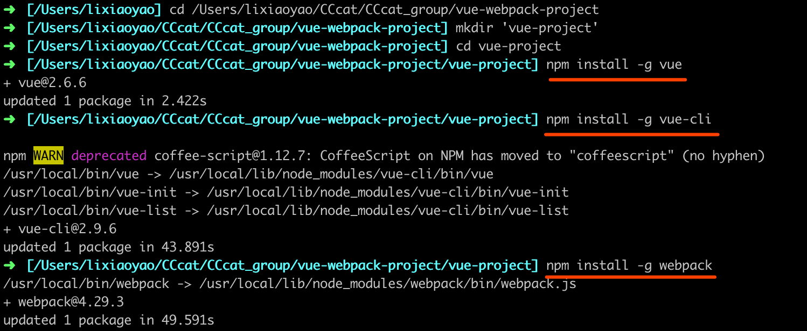
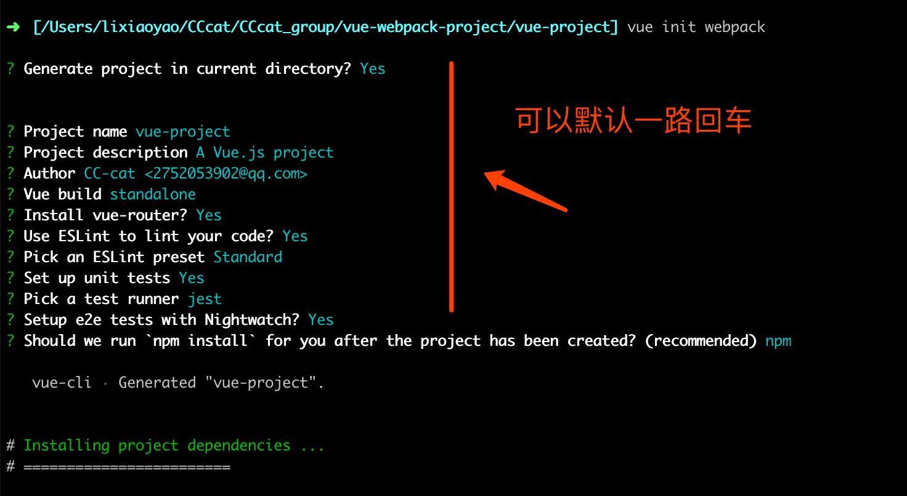
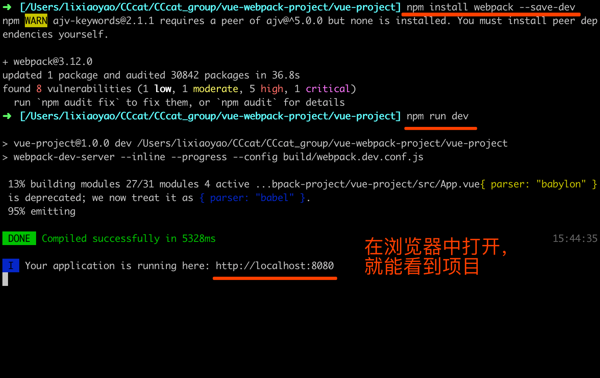
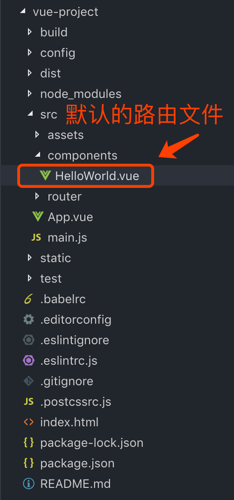
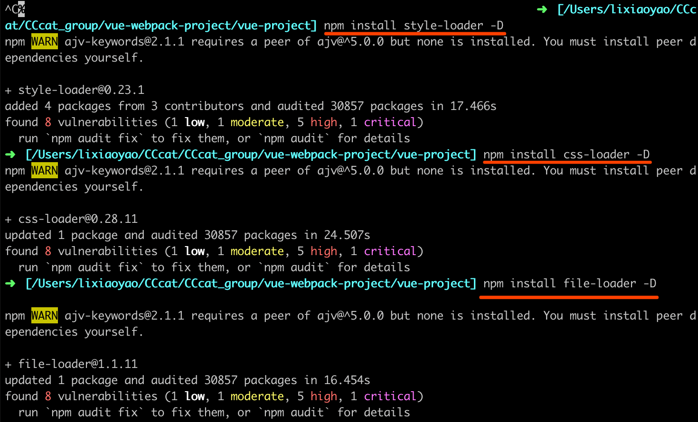
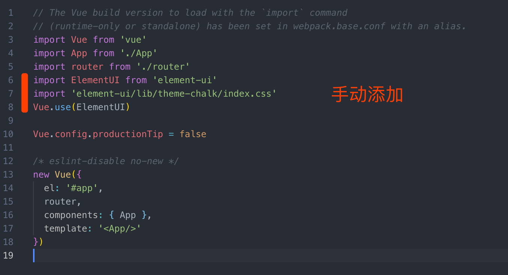
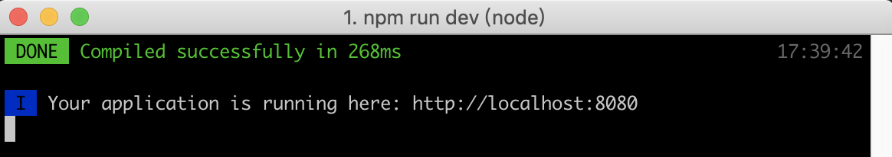
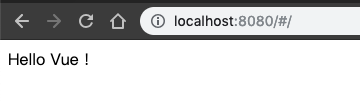
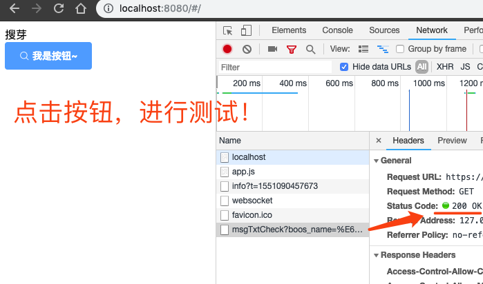
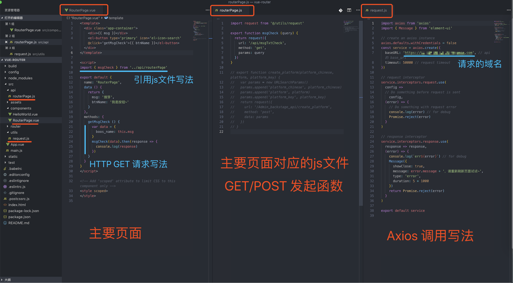

vue从0到1：vue + webpack + element-ui + axios 项目搭建

# 介绍
Vue.js 是一款极简的 mvvm 框架。用一个词来形容它，就是 “轻·巧” 。
如果我们用一句话来描述它，它能够集众多优秀逐流的前端框架之大成，但同时保持简单易用。
# 全局安装 vue-cli
1 | $ npm install -g vue #全局安装vue |
# 全局安装 webpack
1 | $ npm install -g webpack #全局安装webpack |
# 初始化项目
1.创建项目文件夹
1 | $ vue init webpack 'vue-project' #初始化项目，项目名称：vue-project |
注：–save 和 –save-dev 是将 安装好的包 保存在 package.json 中，可以省掉你手动修改 package.json 文件的步骤。
详细说明：
–save : 自动把模块和版本号添加到 dependencies 部分。
–save-dev : 自动把模块和版本号添加到 devdependencies 部分。
- 通过这些命令，我们会得到一个新的 package.json。然后再做一个试验就懂得了区别：删除 node_modules 目录，然后执行 npm install –production，可以看到，npm 只帮我们自动安装 package.json 中 dependencies 部分的模块；如果执行 npm install ，则 package.json 中指定的 dependencies 和 devDependencies 都会被自动安装进来。
2.在本地运行项目
1 | $ npm run dev #运行项目 |
- 根据终端提示，在浏览器打开 http://localhost:8080
1 | Your application is running here: http://localhost:8080 |
# 节点图示
图示里是先创建了项目文件夹，最终效果跟上面的步骤一样。
从新建项目起：



# 节点说明（vue + webpack 项目）
执行 npm run dev 成功后，打开浏览器 http://localhost:8080 并且没报错的情况下，
vue + webpack 项目搭建 就完成了，按需进行以下安装。(∩_∩)
# 使用 Element-UI 前，需安装、修改的配置
1.安装loader模块
1 | $ npm install style-loader -D |
图示：

# 安装 Element-UI
1.安装element-ui模块
1 | $ npm install element-ui --save |
2.引入 Element，前面已经全局安装了 element-ui，只需要在 Vue 项目中引入即可
打开项目：src/main.js,添加下面三条
1 | import ElementUI from 'element-ui' |
图示：

3.结束 🔚
到这一步，element-ui 模块就安装完成了！😄😄
然后在.vue 文件里就直接使用了。
# 节点说明（vue + webpack + element-ui 项目）
执行到这，vue + webpack + element-ui 项目搭建 就完成了，按需进行以下安装。(∩_∩)
# 安装 Axios
1 | $ npm install axios |
# 安装 Vue-axios
1 | $ npm install --save axios vue-axios |
# 使用 Axios 小案例
1.新建文件
新建文件 RouterPage.vue，位置放在 src > components 文件夹下。
2.修改默认的路由文件
文件位置在src > router > index.js。
3.运行
运行 npm run dev 成功后，打开浏览器 http://localhost:8080，测试页面是否修改正确。
终端：

浏览器：（显示正确）

在终端使用快捷键 control + c，来终止运行。
4.新建必备文件
新建文件夹 utils ，位置放在
src文件夹下。新建文件 request.js ，位置放在
src>utils文件夹下。
request.js 文件内容：
1 | import axios from 'axios' |
新建文件夹 api ，位置放在
src文件夹下。新建文件 routerPage.js ，位置放在
src>api文件夹下。

routerPage.js 文件内容：
示例只用了 HTTP GET 测试，我这里把 http post 写法注释掉了。
1 | import request from '@/utils/request' |
5.修改文件
修改文件 RouterPage.vue ，增加测试按钮。
RouterPage.vue 文件内容：
1 | <template> |
执行 npm run dev成功后，打开浏览器 http://localhost:8080，开始测试。
图示总结：

# 常用 Vue 终端命令
1 | $ npm run dev #本地运行项目 |
# 结语
vue + webpack + element-ui + axios 项目搭建，完成啦！
以上，就完成了一个正式 Vue 项目的基础搭建。
(∩_∩)